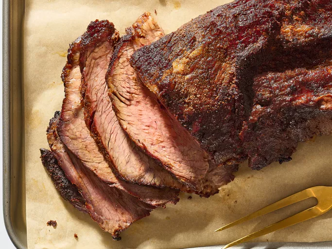

Yeah, I-Lived-in-Texas, Smoked Brisket

Description
This smoked beef brisket recipe is hands-down the best way I have found to cook a brisket.
Ingredients
- Wood Chips
- ¼ Cup Paprika
- ¼ Cup White Sugar
- ¼ Cup Ground Cumin
- ¼ Cup Cayenne Pepper
- ¼ Cup Brown Sugar
- ¼ Cup Chili Powder
- ¼ Cup Garlic Powder
- ¼ Cup Onion Powder
- ¼ Cup Kosher Salt
- ¼ Cup Freshly Cracked Black Pepper
- 10 Pounds Beef Brisket, or more to taste
Steps
- Gather the ingredients.
- Soak wood chips in a bowl of water, 8 hours to overnight.
- Mix paprika, white sugar, cumin, cayenne pepper, brown sugar, chili powder,
garlic powder, onion powder, salt, and black pepper together in a bowl. Rub the
spice mixture over the entire brisket; refrigerate for 24 hours.
- Preheat smoker to between 220 degrees F (104 degrees C) and 230 degrees F (110 degrees C).
Drain wood chips and place in the smoker.
- Smoke brisket in the preheated smoker until it has an internal temperature of
165 degrees F (74 degrees C), about 12 ½ hours. Wrap brisket tightly in butcher
paper or heavy-duty aluminum foil and return to smoker.
- Continue smoking brisket until an internal temperature of 185 degrees F
(85 degrees C) is reached, about 1 hour more.
Return